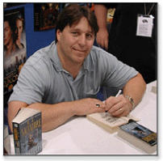

Биография Роберта А. Сальваторе

Роберт Сальваторе родился в штате Массачусетс в 1959 году. Его связь с фэнтази, особенно в литературе, началась со второго курса колледжа, когда он получил книгу Р.Р. Толкиена "Властелин колец" в качестве рождественского подарка. Он немедленно изменил свои интересы с компьютерных наук на журналистику. Сальваторе получил степень бакалавра в сфере коммуникаций Фитчбергского Государственного Колледжа в 1981, а затем продолжил изучение английского языка и получил степень бакалавра гуманитарных наук. В 1982 году Сальваторе серьезно занялся литературой и создал рукопись, которая стала основой The Fourth Magic.
Его первой опубликованной новеллой бала The Crystal Shard для TSR в 1988 году. Начиная с этого времени Сальваторе публикует несколько новелл, включая бестселлеры Нью-Йорк Таймс The Halfling's Gem, Sojourn и The Legacy, первое для Сальваторе и TSR издание в жесткой обложке.
За свои первые писательские годы он много работает, в частности посвящает литературе весь 1990 год. Сальваторе наиболее известен как создатель темного эльфа по имени Drizzt, одного из наиболее любимых читателями фантастических героев. Более трех миллионов книг Сальваторе было продано и переведено на разные языки, созданы аудио-версии его произведений.
Его ранее опубликованные новеллы, включая The Icewind Dale Trilogy, The Dark Elf Trilogy и The Cleric Quintet стали так же популярны как и The Legacy, Starless Night, Siege of Darkness и Passage to Dawn. The Dark Elf Trilogy вышла в виде коллекционного издания. The Silent Blade стала шестнадцатой оригинальной новеллой для TSR.Осенью 1997 года письма Роберта, его рукописи и другие профессиональные бумаги были переданы в дар библиотеке Фитчбергского Государственного Колледжа в Фитчберге, штат Массачусетс.
В перерывах между писательской деятельностью Роберт со своими тремя детьми посещает хоккейные матчи, скачки и фехтовальные поединки. В качестве своих увлечений он называет софтбол, хоккей и музыку - в особенности Моцарта. В настоящее время он живет в Массачусетсе вместе со своей женой Даяной и их тремя детьми: Брайаном, Джино и Кэтлин.